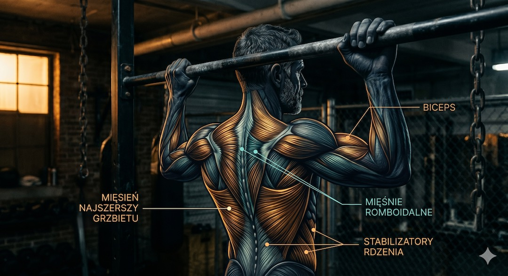
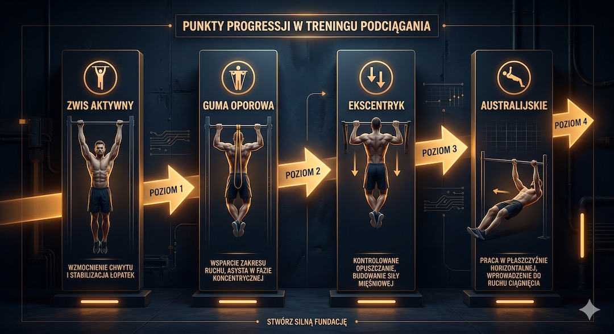
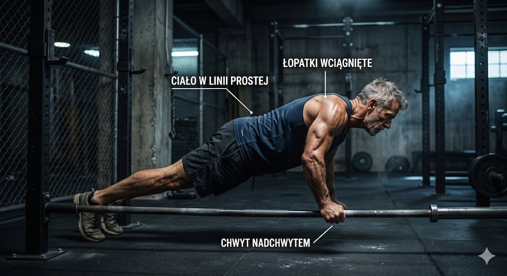
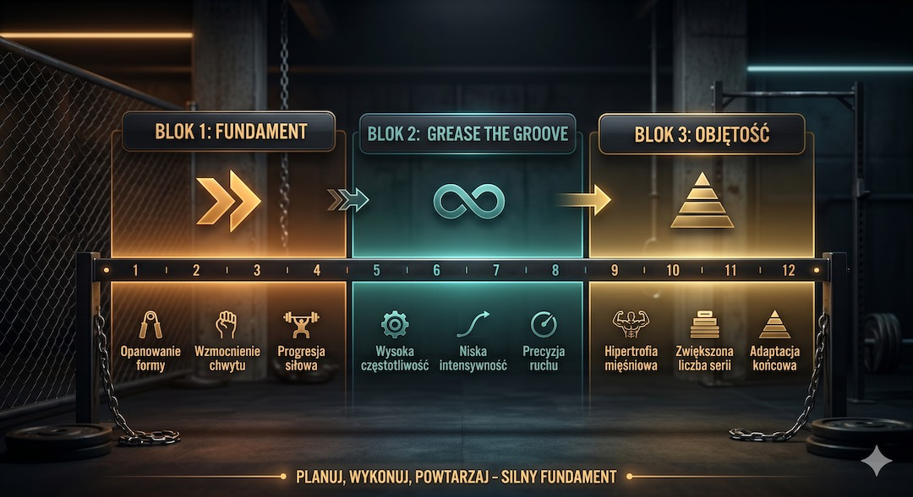
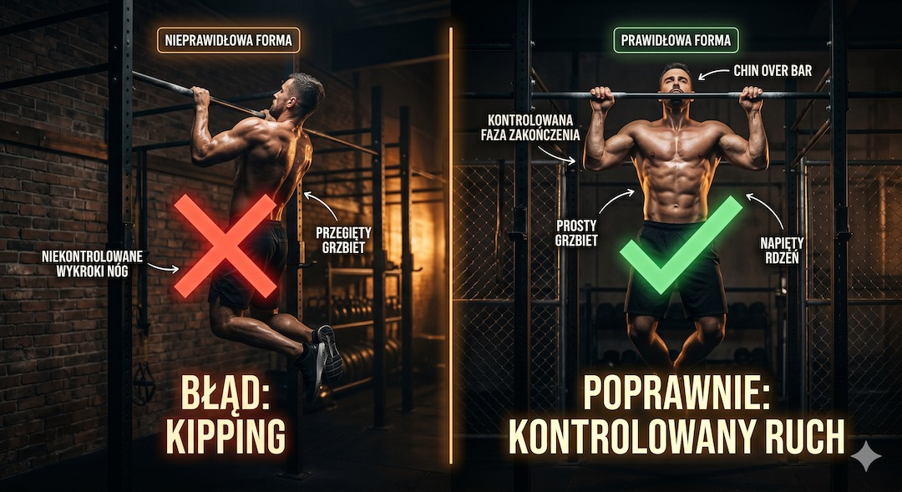

Jeśli zaczynasz po 50-tce, nie zaczynaj od pełnego podciągnięcia. Zacznij od testu barków, zwisu aktywnego, wiosłowania i gumy oporowej. U wielu osób pierwszy czysty ruch pojawia się po 6-12 tygodniach pracy 2-3 razy w tygodniu, pod warunkiem że bark i łokieć nie bolą.
Szybka odpowiedź
Podciąganie po 50-tce buduj etapami: najpierw zwisy i retrakcja łopatek, potem gumy lub negatywy 2-3 razy w tygodniu. U wielu osób pierwszy pełny ruch pojawia się po 8-12 tygodniach systematycznej pracy. Jeśli łokcie zaczynają boleć, zmniejsz objętość i wzmocnij chwyt oraz rotatory barku.
Kluczowe wnioski
- Podciąganie po 50-tce jest w pełni bezpieczne i osiągalne, jeśli zastąpisz pośpiech mądrą, wieloetapową progresją.
- Australijskie podciągnięcia (inverted rows) to absolutny fundament i najlepszy punkt startowy do budowania siły pleców i barków.
- Bezpieczeństwo na pierwszym miejscu: zwisy aktywne i faza ekscentryczna budują stawy i ścięgna przed próbą pełnego ruchu.
- Regeneracja jest kluczem: planuj minimum 48-72 godziny przerwy między sesjami drążka, by uniknąć przeciążeń barków.
Mit podciągania — dlaczego myślisz, że to nie dla ciebie?
Podciąganie ma opinię ćwiczenia dla dwudziestolatków z siłowni. Tymczasem badania z 2022 roku opublikowane w Journal of Strength and Conditioning Research pokazują, że osoby po 50. roku życia, które regularnie trenują siłowo, osiągają porównywalny przyrost siły względnej jak ich młodsi odpowiednicy — tyle że potrzebują nieco więcej czasu na adaptację. To nie wiek blokuje podciąganie. Blokuje go brak progresji i złe wejście w trening.
Grzesiek zaczął ćwiczyć na drążku mając 54 lata. Pierwsza próba skończyła się na zwisaniu przez osiem sekund. Rok później robił serie po dziesięć powtórzeń. Nie jest wyjątkiem — jest przykładem tego, co dzieje się, gdy ktoś ma cierpliwość i dobry plan zamiast pośpiechu.
Podciąganie po 50-tce jest osiągalne, ale wymaga innego wejścia niż u kogoś, kto od lat trenuje na drążku. Najpierw budujesz chwyt, łopatki i kontrolowane opuszczanie. Dopiero potem sprawdzasz pełny ruch. Szerszy start siłowy znajdziesz w poradniku jak zacząć trening siłowy po 50.
Co daje podciąganie i jakie korzyści odczujesz po 50-tce?
Podciąganie angażuje mięśnie najszersze grzbietu, bicepsy, mięśnie romboidalne oraz głębokie stabilizatory kręgosłupa. Dla osoby po pięćdziesiątce oznacza to trzy rzeczy naraz: silniejsze plecy, zdrowsze barki i sprawniejszy rdzeń — czyli dokładnie te obszary, które najbardziej cierpią od długiego siedzenia i spadku aktywności.
Badanie opublikowane w PLOS ONE (2021) wykazało, że regularny trening z własną masą ciała, w tym podciągania, istotnie poprawia gęstość mineralną kości u mężczyzn i kobiet powyżej 50. roku życia — efekt porównywalny z treningiem siłowym z obciążeniami zewnętrznymi. To ważna informacja dla tych, którzy chcą działać profilaktycznie na osteoporozę.
Dodatkowy bonus: podciąganie uczy ciało kontroli własnej masy. To przekłada się na lepszą postawę, mniejszy ból odcinka szyjno-piersiowego kręgosłupa i większą pewność ruchową w codziennym życiu — przy wstawaniu z krzesła, wchodzeniu po schodach, noszeniu zakupów. Zobacz też plan aktywności po 50.
- Silniejsze plecy: mięśnie najszersze i romboidalne stabilizują kręgosłup i poprawiają postawę.
- Zdrowe barki: pełen zakres ruchu podciągania wzmacnia stożek rotatorów bez przeciążania stawu.
- Lepszy core: napięcie brzucha podczas podciągania aktywuje głębokie stabilizatory.
- Mocniejsze kości: obciążenie mechaniczne stymuluje kościotworzenie.
- Sprawność funkcjonalna: siła chwytu i ramion przekłada się na codzienne czynności.

Zanim złapiesz drążek — jak sprawdzić gotowość i ćwiczyć bezpiecznie?
Zanim zaczniesz jakikolwiek program treningowy z podciąganiem, zrób sobie prosty test gotowości. Nie chodzi o to, żeby cię zniechęcić — chodzi o to, żebyś nie skończył z kontuzją barku w trzecim tygodniu. Osoby z rozpoznaną chorobą stożka rotatorów, niestabilnością barku lub przebytymi operacjami kręgosłupa szyjnego powinny wcześniej skonsultować plan z ortopedą lub fizjoterapeutą.
Trzy pytania sprawdzające gotowość:
Pierwsze: czy możesz bez bólu unieść obie ręce nad głowę i trzymać je tam przez 10 sekund? Jeśli nie — zacznij od terapii mobilizacyjnej barków, zanim przejdziesz do drążka. Drugie: czy możesz bez dyskomfortu wykonać 15 powtórzeń wiosłowania hantlem (lub taśmą)? Jeśli nie — twoje plecy nie są jeszcze gotowe na obciążenie podciąganiem. Trzecie: czy masz stabilny chwyt i możesz zwisać na drążku przez co najmniej 15 sekund? Jeśli tak — możesz startować z planem poniżej.
Jeden sygnał bezwzględnie zatrzymuje trening: ostry ból w stawie barkowym podczas zwisu lub ruchu. Dyskomfort mięśniowy — zwykłe zmęczenie — jest normalny. Ból stawu — nie. Sprawdź zasady bezpiecznego startu.

Od zera do pierwszego podciągnięcia — jak wygląda plan progresji?
Droga do pierwszego pełnego podciągnięcia dla osoby zaczynającej od zera trwa zazwyczaj od 6 do 12 tygodni — w zależności od wyjściowej siły ramion i pleców. Nie ma sensu spieszyć się na tym etapie, bo zbyt szybka progresja to prosta droga do przeciążenia mięśnia piersiowego mniejszego lub ścięgien mięśnia dwugłowego ramienia.
Plan progresji opiera się na czterech filarach, które realizujesz równolegle:
Filar 1 — zwisy aktywne: Chwyć drążek i aktywnie „wciągnij” łopatki w dół i do środka, jakbyś chciał wsunąć je do tylnych kieszeni spodni. Utrzymaj 5–10 sekund. Powtórz 5 razy. To buduje fundament pod ruch podciągania.
Filar 2 — podciąganie ze wspomaganiem: Użyj gumy oporowej (band) podwieszonej do drążka, wstaw kolano i wykonaj pełny ruch. Zaczynaj od grubej gumy (opór 20–30 kg), zmniejszaj opór co 2–3 tygodnie. Filar 3 — faza ekscentryczna: Wejdź na drążek ze schodka lub skrzynki tak, żeby broda była powyżej drążka, i opuszczaj się powoli przez 5–8 sekund. To najszybszy sposób na budowanie siły w ruchu podciągania. Filar 4 — australijskie podciągnięcia: Opisuję je szczegółowo w następnej sekcji — to twój codzienny trening mięśni pleców. Przeczytaj, jak zacząć trening siłowy po 50.
- Tydzień 1–2: zwisy aktywne (3×5 sek), australijskie podciągnięcia (3×10), trening 3×/tydz.
- Tydzień 3–4: dodaj ekscentriki (3×3 powtórzenia, opuszczanie 6 sek) i gumy oporowe.
- Tydzień 5–6: zmniejsz opór gumy o jeden stopień, zwiększ ekscentriki do 3×5.
- Tydzień 7–8: próba podciągnięcia bez gumy — nawet jeśli uda się jedno, to sukces.
- Tydzień 9–12: konsolidacja techniki, budowanie kolejnych powtórzeń.

Dlaczego australijskie podciągnięcia to fundament treningu?
Australijskie podciągnięcie (ang. inverted row ) to ćwiczenie, w którym leżysz pod poziomym drążkiem lub stosem do wiosłowania, chwytasz go i podciągasz klatkę piersiową ku górze, trzymając ciało w linii prostej. Brzmi prosto — i jest proste. Ale dla osoby zaczynającej budowanie siły pleców po pięćdziesiątce to absolutny must-have w treningu.
Dlaczego akurat to ćwiczenie? Bo angażuje te same mięśnie co podciąganie (najszersze, romboidalne, tylne partie barków), ale przy ułamku obciążenia. Możesz regulować trudność, ustawiając drążek wyżej (łatwiej) lub niżej (trudniej). Badania opublikowane w Journal of Human Kinetics (2018) potwierdzają, że aktywacja mięśnia najszerszego grzbietu w australijskim podciąganiu sięga 70–80% maksymalnej — to wystarczający bodziec do budowania siły u osób nietreniowanych.
Zacznij od 3 serii po 8–12 powtórzeń, 3 razy w tygodniu. Gdy dojdziesz do 15 czystych powtórzeń z drążkiem ustawionym nisko i stopami wyprostowanymi — jesteś gotowy do kolejnego etapu progresji.

Plan 12 tygodni: jak dojść do 50 podciągnięć na sesję?
Cel 50 podciągnięć brzmi ambitnie — i jest ambitny. Ale nie chodzi tu o 50 powtórzeń w jednej serii. Chodzi o łączną liczbę podciągnięć wykonanych podczas jednej sesji treningowej, rozłożonych na kilka serii. To osiągalne w ciągu 10–16 tygodni dla osoby, która przeszła etap progresji opisany wyżej i regularnie ćwiczy 3 razy w tygodniu.
Harmonogram 12 tygodni wygląda następująco: w pierwszym bloku (tygodnie 1–4) trenujesz 3 razy w tygodniu, łącząc australijskie podciągnięcia, ekscentriki i próby z gumą. Cel: pierwsze 1–3 pełne podciągnięcia bez wspomagania. W drugim bloku (tygodnie 5–8) stosujesz metodę „grease the groove” — czyli wykonujesz 2–3 podciągnięcia kilka razy dziennie, rozłożone w ciągu dnia, aby budować objętość bez przeciążania. W trzecim bloku (tygodnie 9–12) realizujesz trening objętościowy: 5–6 serii z krótkimi przerwami, dążąc do 50 powtórzeń łącznie na sesję.
Ważna zasada: nigdy nie trenuj podciągania dwa dni pod rząd. Mięśnie najszersze i bicepsy potrzebują 48 godzin regeneracji. Dla osób po pięćdziesiątce — czasem 72 godzin. Słuchaj swojego ciała, nie kalendarza. Zobacz badania kontrolne przy treningu po 50.
- Blok 1 (tydz. 1–4): fundament siły — australijskie podciągnięcia, ekscentriki, guma.
- Blok 2 (tydz. 5–8): Grease the Groove — 2–3 podciągnięcia kilka razy dziennie.
- Blok 3 (tydz. 9–12): trening objętościowy — cel 50 podciągnięć łącznie na sesję.
- Regeneracja: min. 48h między sesjami angażującymi te same mięśnie.
- Monitorowanie: zapisuj liczbę powtórzeń — postęp motywuje lepiej niż jakikolwiek plan.

Jakich błędów unikać, by nie cofnąć postępu o tygodnie?
Najczęstszy błąd to tzw. kipping — użycie rozmachu bioder i nóg, żeby wyciągnąć się ponad drążek. W CrossFicie to technika, w treningu siłowym dla osób po pięćdziesiątce — prosta droga do kontuzji odcinka lędźwiowego lub barku. Każde powtórzenie ma być kontrolowane: wolne opuszczanie, pełen zakres ruchu, brak szarpania.
Drugi błąd: pomijanie rozgrzewki. Barki i nadgarstki muszą być odpowiednio przygotowane przed zwisem. Minimum 5 minut mobilizacji: krążenia ramion, rotacje barku z gumą, rozciąganie klatki piersiowej. Bez tego ryzyko kontuzji stożka rotatorów rośnie kilkakrotnie — szczególnie na pierwszych treningach, gdy stawy nie są jeszcze przyzwyczajone do nowego obciążenia.
Trzeci błąd: brak cierpliwości i porównywanie się z innymi. Ktoś w internecie zrobił pierwsze podciągnięcie po 4 tygodniach? Dobra. Ty możesz potrzebować 10. I to jest w porządku — twoje mięśnie, twoje tempo, twój sukces.

Najczęściej zadawane pytania
Czy podciąganie jest bezpieczne po 50. roku życia?
Tak, podciąganie po 50. roku życia jest bezpieczne, jeśli zaczniesz od progresji dostosowanej do stawów i ścięgien. Najpierw wykonuj zwisy aktywne, wiosłowanie i podciąganie z gumą, a dopiero potem pełne ruchy. Kluczowe są technika, brak bólu stawowego i regularna regeneracja.
Ile czasu zajmuje nauka podciągania od zera po pięćdziesiątce?
U większości osób pierwszy pełny ruch pojawia się po 6-12 tygodniach systematycznego treningu trzy razy w tygodniu. Tempo zależy od masy ciała, siły chwytu i jakości regeneracji. Najszybsze postępy dają połączenie ekscentryki, gum oporowych i australijskich podciągnięć.
Jak dojść do 50 podciągnięć jako osoba po 50-tce?
Najpierw zbuduj 3-8 czystych powtórzeń w serii, a potem pracuj nad objętością całej sesji. Cel 50 oznacza sumę wszystkich powtórzeń, nie jedną serię. Sprawdza się schemat 5-6 serii z krótką przerwą, zwiększanie łącznej liczby co tydzień i stałe monitorowanie zmęczenia barków.
Co to są australijskie podciągnięcia i dlaczego warto zacząć od nich?
Australijskie podciągnięcia to wiosłowanie własnym ciałem pod niskim drążkiem, zwykle łatwiejsze niż klasyczne podciąganie. Angażują plecy, łopatki i chwyt przy mniejszym obciążeniu stawów barkowych. Dzięki temu pozwalają bezpiecznie budować bazę siłową potrzebną do pierwszego pełnego podciągnięcia.
Czy podciąganie na gumie oporowej to dobre ćwiczenie dla początkujących po 50-tce?
Tak, guma oporowa to bardzo dobre narzędzie na start, bo odciąża najtrudniejszą fazę ruchu i pozwala utrzymać poprawną technikę. Wybierz mocniejszą gumę na początku, potem stopniowo zmniejszaj wsparcie. Łącz ten wariant z ekscentryką oraz ćwiczeniami chwytu, aby postęp był stabilny.
Plan startowy, ćwiczenia, progresję i zasady bezpieczeństwa znajdziesz w Centrum Treningu Siłowego po 50-tce.
Źródła
- Marcos-Pardo PJ et al. (2022). Strength Training and Aging. Journal of Strength and Conditioning Research.
- Lai Z et al. (2021). Effects of bodyweight exercise on bone mineral density. PLOS ONE.
- Youdas JW et al. (2010). Surface EMG of the rotator cuff and scapular muscles during the pull-up. Journal of Strength and Conditioning Research.
- Kompf J, Arandjelovic O. (2017). Understanding and Overcoming the Sticking Point in Resistance Exercise. Sports Medicine.
- Calatayud J et al. (2018). Muscle Activation in Upper-body Exercises. Journal of Human Kinetics.
- ACSM Position Stand: Physical Activity and Bone Health (2004). Medicine & Science in Sports & Exercise.
- Westcott WL. (2012). Resistance training is medicine. Current Sports Medicine Reports.
Uwaga: Artykuł ma charakter informacyjny i edukacyjny. Nie zastępuje konsultacji lekarskiej, diagnozy ani leczenia.